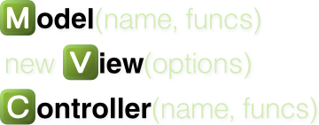

JavaScript Framework Shootout
Presenter Notes
Authors
David Leucke @daffl
Eric Kryski @ekryski
Bacon
Presenter Notes
<<<<<<< HEAD
What is a framework anyway?
MVC, MVVM, MOVE? WTF?
Bacon
Presenter Notes
Model, View, Controller
Ipsum
Presenter Notes
TodoMVC
The same Todo application implemented using MV* concepts in most of the popular JavaScript MV*
frameworks of today.

- Backbone
- Ember
- AngularJS
- Spine
- KnockoutJS
- DOJO
- ...
Presenter Notes
Client side MVC
Sit
Presenter Notes
JavaScriptMVC
 One of the first client side JavaScript MVC frameworks first released about 5 years ago.
Provides full application stack with dependency manager, MVC framework (formerly jQueryMX), functional testing library and documentation engine:
- CanJS
- jQuery++
- StealJS - JavaScript file dependency manager
- Funcunit - A QUnit and jQuery based functional testing library
- DocumentJS - A JavaScript documentation engine
Presenter Notes
Backbone
Pork
Client side MVC framework for building rich web applications. Supports jQuery, Zepto, Mootools, Dojo, YUI.
- can.Construct - inheritable constructor functions
- can.Observe - observable objects
- can.Model - observes connected to a RESTful JSON interface
- can.view - template loading, caching, rendering
- can.EJS - live binding templates
- can.Control - declarative event bindings
- can.route - back button and bookmarking support
Presenter Notes
CanJS - Example
A view
<script type="text/ejs" id="todos">
<ul>
<% for( var i = 0; i < this.length; i++ ) { %>
<li><%= this[ i ].name %></li>
<% } %>
</ul>
</script>
Controls and Models
var Todo = can.Model({
findAll : 'GET /todos',
findOne : 'GET /todos/{id}',
create : 'POST /todos',
update : 'PUT /todos/{id}',
destroy : 'DELETE /todos/{id}'
}, {});
var Control = can.Control({
'button click' : function() {
document.findElementById('mydiv').innerHtml =
can.view('todos', Todo.findAll());
}
});
Presenter Notes
Presenter Notes
Resources
Presenter Notes
CanJS
Dolor
Presenter Notes
Resources
Some Great Resources
Amen